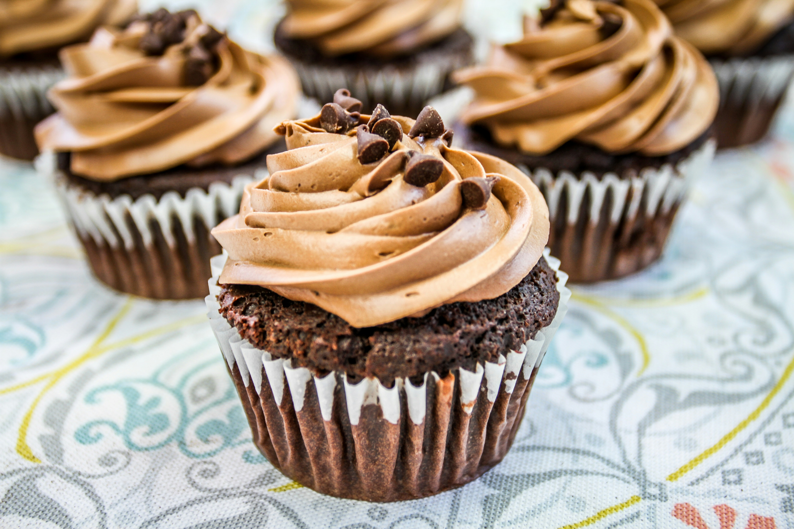
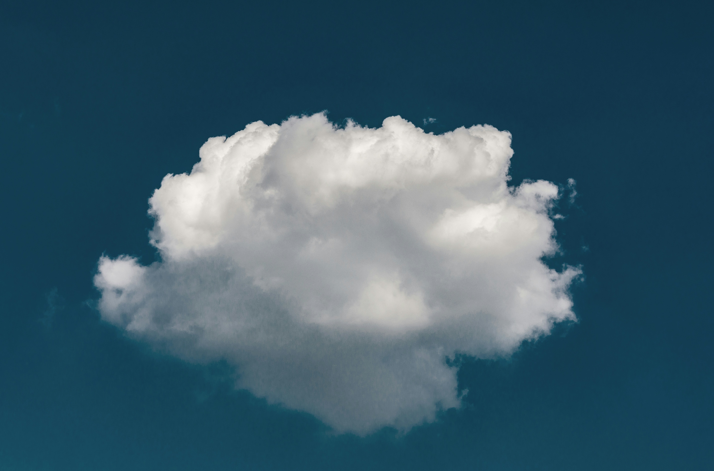
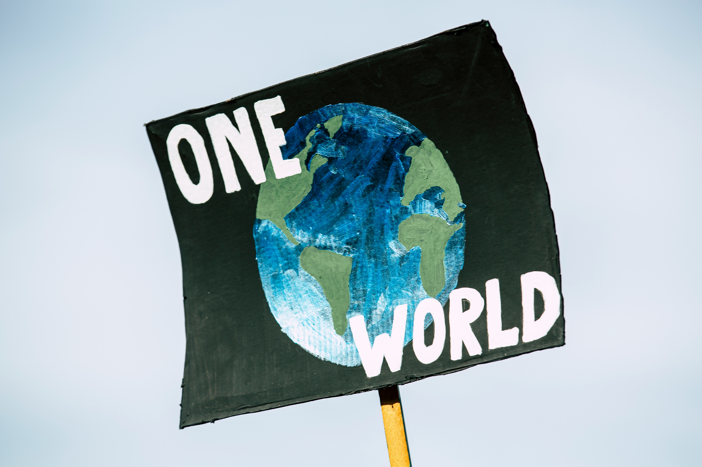
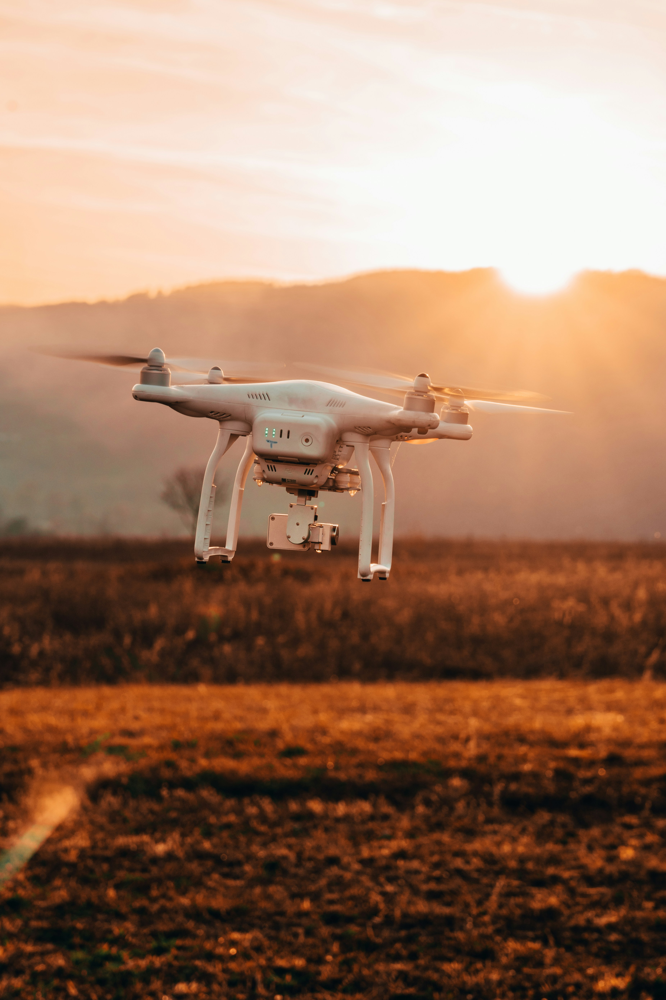

AMOF
Group of people who look at the sky to see what is happening and how it happens.
Air pollution
Dirt in the air from cars, ships, trucks and fires that hurts people and changes clouds.
Automation
Telling a computer to do stuff to things, on its own.
CMS
- Help make computer work fast.
- Computer small world help.

Cake Club
A group of people who work together and enjoy bringing sweet things together in one place, warm them to create something very good to eat and share them.
Climate
We study how storms, rain, heat waves, and other things will change as we put more bad things in the air.
Climate Simulation
Finding a way to talk about how different parts of the world work using a computer's brain.

Cloud
- Big and white soft thing in the sky.
- A body of water in the sky that hangs around until it's ready to rain or snow.
Cloudy
When the sky tries on soft silver roads to make you feel how close and far it could be to you.

Coffee
A black and warm drink that makes us not fall asleep and talk together and talk together next to the machine we use to prepare it (without using the pointy cutting thing).
Data
Large information set.
Dispersion
Bad air moving and seeing where it goes and how it spreads out.

Environmental Sustainability
Stop making the world change in a bad way. Use less power. Use less water. Think about how you use things and use things more than once. Make things in a clean way and use them carefully. Throw away less.
High Performance Computing (HPC)
Big computers in your building or far away that we use to understand how the sky works.
JASMIN
It is a big computer system that we use to figure out how the air, wind, snow and storms change in the past and in the future.
Modelling
Runs on a big computer and takes a large information set to say high change of what will happen.
Monsoon
A set of winds that changes direction between winter and summer, bringing most of a country’s rain.
NCAS
- Land-wide sky air doctors.
- We are the team of people working to understand the air to help make life better and find ways to save us. We like coffee beer food and clouds in no order. We are the team of people working to help make the air great again (air thinking people).
NCAS Tagline
Allowing, helping and leading the discovering of facts about the parts of the air now and for the many years to come to guard people and living parts of the earth.
Observation
Getting information from looking.
Ocean
The biggest body of water, with hot and cold waters moving up and down, left and right, changing how much heat is changing from place to place around the world.
Research Scientist
I understand how the air around us changes and creates rain. I try to understand how big bodies of air half the size of the world cause changes in small bodies of air that cause rain called storms.
Research Software Engineer
Person that knows how to fix things and make things work and put and take things from clouds and is poor but happy.
SCR
It is a place where our team goes every week on day five of the week to laugh, talk, drink and have food.
Slack
A computer system where people can talk and write to each other, creating groups and sharing things at real time.
Supervising
Telling other people at work what to do. Help people with their questions.

Uncrewed Aerial System (UAS)
Small flying box that looks at things in the sky.
Weather
- When the air is hot or wet and moving and changes every day.
- What's happening above your head with air, rain, sun and so on.
- Something that happens all the time and it's outside.
- Stuff happening in the sky that causes wind, rain, snow and storms.